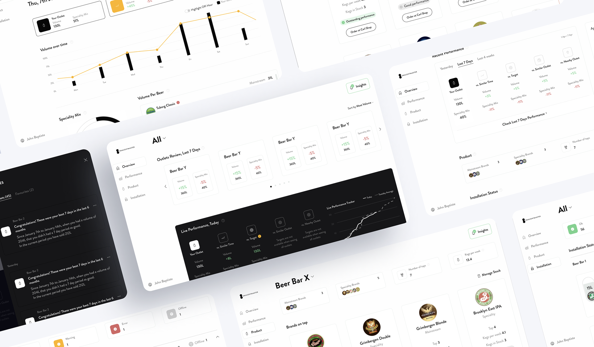
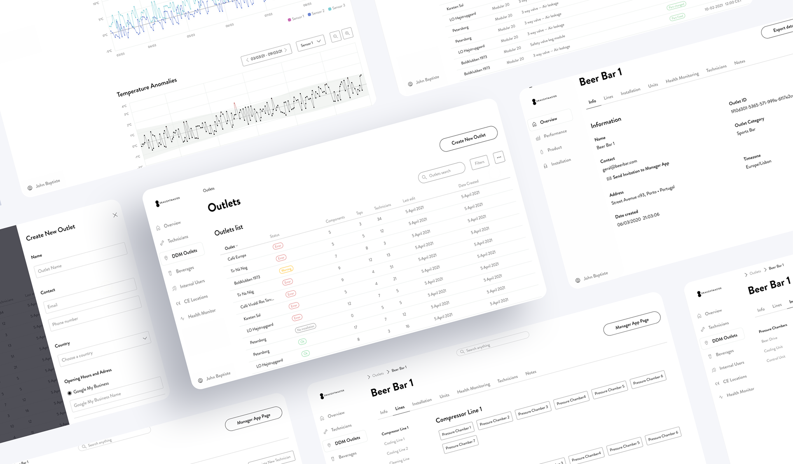

Digital DraughtMaster
Four interconnected platforms for Carlsberg's IoT beer dispensing ecosystem — serving Carlsberg's internal teams, bar owners, field technicians, and consumers.

01 / Context
Carlsberg Group describes Digital DraughtMaster as "the biggest innovation in draught beer in 50 years." The hardware core is the Extra10 (X10) — a countertop unit using proprietary 10L PET kegs dispensed via compressed air, with no CO2 and no line cleaning required. Beer stays fresh for up to 31 days. Bar staff swap kegs themselves in minutes.
Pressure sensors embedded in each keg feed real-time data — flow rates, temperatures, keg levels — into an AWS cloud infrastructure. The platform was already live across 200+ venues in Western Europe, with a planned rollout across 10 countries from 2024. The operational software needed to scale with it.
I joined through Metyis as the sole UX/UI Designer on the project, responsible for the full platform design across four distinct products: a web-based fleet management tool for Carlsberg's internal teams, a mobile performance app for bar owners, a field installation app for technicians, and a consumer companion app for X10 owners. Same data model. Four completely different definitions of what that data means.
02 / The Challenge
The IoT data existed. The challenge was that the same underlying events needed to be presented in fundamentally different ways depending on who was looking at them — and what action they could take.
A pressure anomaly in Keg 3 at Café Europa means something different to a Carlsberg operations manager coordinating across 200 venues, a bar owner who needs to know if service will be disrupted tonight, a technician who has 45 minutes to diagnose and fix it on-site, and a consumer checking their home X10 before a dinner party. The same event. Four different users. Four different responses required.
The design problem wasn't information architecture — it was information relevance. Every user group was either overwhelmed with data they couldn't act on, or underserved with context they needed to make a decision.
"The data was the same for everyone.
What changed was who could act on it — and how fast."
03 / The Platforms
One design system. Four contexts. Each platform was built from a shared component library and token set — but the information hierarchy, navigation depth, and interaction model were designed specifically for each user type and the environment they work in.
Fleet-level visibility across all DDM venues. Carlsberg's operations and sales teams use the Control Tower to manage outlets, monitor installation health, track technician activity, and identify systemic issues before they escalate. The key design challenge was surfacing critical events — pressure errors, offline sensors, temperature anomalies — across hundreds of venues without overwhelming the dashboard with noise. The solution: a tiered status system (Ok / Warning / Error / Offline) with drill-down to individual outlet detail, line installation maps, and health monitoring logs. Issue reports are timestamped and tagged with resolution status, giving operations teams a full audit trail without manual reporting.
Daily performance at a glance for bar and restaurant operators. The app surfaces volume and speciality mix for the current day, benchmarked in real time against the day-of-week average, target, similar outlets nearby, and geographically close venues. Bar owners typically check this before service and during quiet periods — the design prioritises speed over depth. Performance data, brand-level keg status, and installation health are separated into four clear tabs (Overview, Performance, Product, Installation) so operators can reach the information they need without navigating through data irrelevant to them.
Designed to be used in a noisy cellar, under time pressure, often with one hand occupied. Technicians use the app both for new installations and for diagnosing faults at existing venues. The installation flow is guided step-by-step: scan the QR code on the hardware unit, select the component type (Pressure Chamber, Beer Tank, Cooling Unit), validate signal strength with a live indicator, confirm server connection, and mark installation complete. Fault diagnosis uses the same outlet-issue-resolution structure as the Control Tower — but surfaced through a mobile list with colour-coded priority tags rather than a data grid. Outlet search with inline issue labels lets technicians triage before they arrive on site.
The consumer-facing companion for X10 home and small venue units. The setup flow mirrors the technician installation experience but is designed for a non-technical user: Bluetooth discovery shows available units by serial number, activation involves opening the tower and following a visual prompt, and connection confirmation is celebrated with a clear success screen. Once set up, the app surfaces keg health (expiration date, temperature, days remaining), recent pour volume with day-of-week benchmarking, and personalised tips and insights based on pouring behaviour. The X10 app uses the same visual language as the rest of the DDM system — same typography, same status colours — but the tone shifts from operational to encouraging.

04 / Outcomes
4
Platforms shipped from a single shared design system — web, Android, iOS ×2
200+
Venues live across Western Europe at launch
10
Countries in Carlsberg's planned rollout from 2024
The shared design system meant that component decisions made for the Control Tower — status colours, severity indicators, outlet cards — carried through to the Technician App and Bar Manager App without duplication. Engineers building across platforms worked from the same token set. A change to the Error state propagated everywhere simultaneously.
05 / Reflection
Designing four products simultaneously creates a constant tension between coherence and specificity. The temptation is to push component reuse too far — to make a mobile card work identically to a web table row because they represent the same data object. In practice, the Technician App needed components that worked glanceably at arm's length in bad lighting; the Control Tower needed components that communicated density efficiently across a large monitor. The design system held the token layer constant and let the component layer flex.
The B2C product (X10 App) also required a genuine shift in tone that the enterprise platforms didn't need — the same data (keg temperature, pour volume) needed to feel reassuring rather than operational. Getting that balance calibrated, without breaking the visual consistency of the broader system, was the most nuanced design problem on the project.
Next project
Hugo Boss — E-commerce Redesign